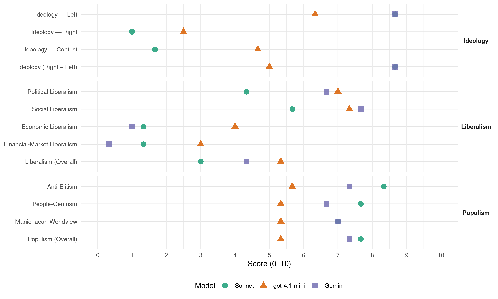

PCP (Portugal, 2015)
manifesto_id 35220_201510
Get full text: This site shows derived annotations and short verbatim quotes only. The full manifesto text is © Manifesto Project / WZB — obtain it via manifesto-project.wzb.eu using the manifesto_id above.
Headline scores
| Dimension | Sonnet | gpt-4.1-mini | Gemini |
|---|---|---|---|
| Populism (Overall) | 7.7 | 5.3 | 7.3 |
| Anti-Elitism | 8.3 | 5.7 | 7.3 |
| People-Centrism | 7.7 | 5.3 | 6.7 |
| Manichaean Worldview | 7.0 | 5.3 | 7.0 |
| Ideology (Right − Left) | 8.7 | 5.0 | 8.7 |
| Liberalism (Overall) | 3.0 | 5.3 | 4.3 |
| Political Liberalism | 4.3 | 7.0 | 6.7 |
| Social Liberalism | 5.7 | 7.3 | 7.7 |
| Economic Liberalism | 1.3 | 4.0 | 1.0 |
| Financial-Market Liberalism | 1.3 | 3.0 | 0.3 |
Evidence per dimension
Economic Liberalism
Gemini · score 1.0 · verified · chunk 1
“controlo pelo Estado dos sectores estratégicos”
distribuição do rendimento mais justa e o controlo pelo Estado dos sectores estratégicos nacionais
Gemini · score 1.0 · verified · chunk 2
“romper com a lógica única de mercado”
actual quadro capitalista, possam romper com a lógica única de mercado na afectação e localização de
Gemini · score 1.0 · verified · chunk 3
“reversão das políticas desreguladoras e liberalizadoras do comércio”
Reversão das políticas desreguladoras e liberalizadoras do comércio mundial com a suspensão de todos os acordos de livre comércio
gpt-4.1-mini · score 3.0 · verified · chunk 1
“reversão das privatizações e a recuperação para o sector público dos sectores básicos estratégicos”
…A afirmação da propriedade social e do papel do Estado na economia com a reversão das privatizações e a recuperação para o sector público dos sectores básicos estratégicos, constituindo um Sector Empresarial do Estado forte e dinâmico….
gpt-4.1-mini · score 3.0 · verified · chunk 2
“a concentração e centralização do grande capital e da reconstituição dos grupos económicos”
A banca privada, reconstituída a partir das privatizações, foi uma das principais alavancas da concentração e centralização do grande capital e da reconstituição dos grupos económicos e financeiros que dominam a economia nacional. O controlo da banca pelo grande capital, nacional e estrangeiro, retirou ao Estado instrumentos de comando económico, de decisão estratégica e de direcção operacional necessárias a uma política económica e financeira.
gpt-4.1-mini · score 6.0 · verified · chunk 3
“Eliminação dos benefícios fiscais aos grupos económicos”
…Eliminação dos benefícios fiscais aos grupos económicos e financeiros e tributação efectiva de todos os rendimentos gerados no País.
Sonnet · score 1.0 · verified · chunk 1
“reversão das privatizações”
A afirmação da propriedade social e do papel do Estado na economia com a reversão das privatizações e a recuperação para o sector público dos sectores básicos estratégicos
Sonnet · score 1.0 · verified · chunk 2
“reversão de empresas privatizadas”
O que impõe a reversão de empresas privatizadas e a travagem e inversão dos processos de subconcessão e subcontratação
Sonnet · score 2.0 · verified · chunk 3
“Reversão das políticas desreguladoras e liberalizadoras do comércio mundial”
Reversão das políticas desreguladoras e liberalizadoras do comércio mundial com a suspensão de todos os acordos de livre comércio da UE já assinados ou em fase de negociação.
Financial-Market Liberalism
Gemini · score 0.0 · verified · chunk 1
“adquirir progressivamente o controlo público da banca”
auxiliados com fundos públicos e adquirir progressivamente o controlo público da banca, por via
Gemini · score 0.0 · verified · chunk 2
“banca comercial sob controlo público”
desenvolvimento social, assente numa banca comercial sob controlo público onde a CGD terá um papel
Gemini · score 1.0 · verified · chunk 3
“regulação dos mercados de capitais, penalizando as deslocalizações”
Defesa de uma nova estratégia para a regulação dos mercados de capitais, penalizando as deslocalizações de empresas, tributando as transacções financeiras
gpt-4.1-mini · score 2.0 · verified · chunk 1
“a reversão das privatizações e a recuperação para o sector público dos sectores básicos estratégicos”
…A afirmação da propriedade social e do papel do Estado na economia com a reversão das privatizações e a recuperação para o sector público dos sectores básicos estratégicos, constituindo um Sector Empresarial do Estado forte e dinâmico….
gpt-4.1-mini · score 2.0 · verified · chunk 2
“A necessidade de consolidar o sistema bancário e conter os riscos sistémicos”
A necessidade de consolidar o sistema bancário e conter os riscos sistémicos para a economia, assegurar uma efectiva regulação, supervisão e fiscalização, travar a especulação financeira e canalizar as poupanças e recursos para o investimento na produção nacional, defender a soberania e impulsionar o crescimento seguro e equilibrado, reclama que a moeda, o crédito e outras actividades financeiras essenciais sejam postos sob controlo e domínio públicos.
gpt-4.1-mini · score 5.0 · verified · chunk 3
“combate sem equívocos aos offshore e ao sigilo bancário”
…revalorizar a Polícia Judiciária, reforçá-la em métodos e meios periciais avançados; reforçar e aperfeiçoar o quadro legal existente, no sentido da criminalização do enriquecimento ilícito, do combate sem equívocos aos offshore e ao sigilo bancário, do agravamento e reforço do quadro sancionatório para o crime económico e financeiro.
Sonnet · score 1.0 · verified · chunk 1
“controlo público da banca”
O Estado, além da CGD, deve assumir participação na propriedade e responsabilidades de administração directa em bancos e outras instituições financeiras recapitalizados ou auxiliados com fundos públicos e adquirir progressivamente o controlo público da banca
Sonnet · score 1.0 · verified · chunk 2
“travar a especulação financeira”
assegurar uma efectiva regulação, supervisão e fiscalização, travar a especulação financeira e canalizar as poupanças
Sonnet · score 2.0 · verified · chunk 3
“tributando as transacções financeiras e pondo fim aos paraísos fiscais”
Defesa de uma nova estratégia para a regulação dos mercados de capitais, penalizando as deslocalizações de empresas, tributando as transacções financeiras e pondo fim aos paraísos fiscais.
Political Liberalism
Gemini · score 6.0 · verified · chunk 1
“degradação do regime democrático”
também, pelo aprofundamento da degradação do regime democrático em todas as suas
Gemini · score 6.0 · verified · chunk 2
“intervenção efectiva da Assembleia da República”
e consagre a intervenção efectiva da Assembleia da República na elaboração e avaliação das políticas
Gemini · score 8.0 · verified · chunk 3
“separação de poderes, a independência do poder judicial”
a fiscalização democrática de todos os poderes do Estado, a separação de poderes, a independência do poder judicial e a autonomia do Ministério Público
gpt-4.1-mini · score 7.0 · verified · chunk 1
“defesa do regime democrático de Abril e cumprimento da Constituição da República”
…Um Portugal livre e democrático, baseado no respeito pelos direitos e liberdades, e no cumprimento da Constituição da República. A defesa do regime democrático de Abril e cumprimento da Constituição da República, com o aprofundamento dos direitos, liberdades e garantias fundamentais e o reforço da intervenção dos cidadãos na vida política….
gpt-4.1-mini · score 7.0 · verified · chunk 2
“defesa da participação, do envolvimento e da auscultação dos profissionais de saúde”
Garantia da participação democrática e desgovernamentalização dos órgãos de gestão, de direcções de serviço e de chefias dos estabelecimentos públicos de saúde que integram o SNS (sejam cuidados de saúde primários, sejam cuidados hospitalares), substituindo as nomeações por concursos públicos, privilegiando o rigor, a transparência e o mérito. Defesa da participação, do envolvimento e da auscultação dos profissionais de saúde e suas organizações representativas, sindicatos, ordens, associações, dos utentes/doentes e das autarquias na definição das orientações estratégicas na política de saúde.
gpt-4.1-mini · score 7.0 · verified · chunk 3
“respeito pela Constituição e a concretização dos direitos”
…A defesa da democracia em Portugal exige o respeito pela Constituição e a concretização dos direitos, liberdades e garantias nela consignados, o combate ao esvaziamento dos poderes do Estado para a União Europeia, a subordinação do poder económico ao poder político, a fiscalização democrática de todos os poderes do Estado, a separação de poderes, a independência do poder judicial e a autonomia do Ministério Público, a dotação de meios para o combate à corrupção, ao crime económico e aos privilégios, o respeito pela autonomia do Poder Local democrático, o combate à promiscuidade entre cargos públicos e interesses privados, pelos direitos dos trabalhadores e das populações.
Sonnet · score 3.0 · verified · chunk 1
“aprofundamento dos direitos, liberdades e garantias fundamentais”
A defesa do regime democrático de Abril e cumprimento da Constituição da República, com o aprofundamento dos direitos, liberdades e garantias fundamentais e o reforço da intervenção dos cidadãos na vida política.
Sonnet · score 4.0 · verified · chunk 2
“gestão democrática das Áreas Protegidas”
Uma política de preservação da Natureza assente na gestão democrática das Áreas Protegidas e orientada para a valorização
Sonnet · score 6.0 · verified · chunk 3
“independência do poder judicial e a autonomia do Ministério Público”
a fiscalização democrática de todos os poderes do Estado, a separação de poderes, a independência do poder judicial e a autonomia do Ministério Público, a dotação de meios para o combate à corrupção
Liberalism (Overall)
Gemini · score 4.0 · verified · chunk 1
“controlo pelo Estado dos sectores estratégicos”
distribuição do rendimento mais justa e o controlo pelo Estado dos sectores estratégicos nacionais
Gemini · score 4.0 · verified · chunk 2
“romper com a lógica única de mercado”
actual quadro capitalista, possam romper com a lógica única de mercado na afectação e localização de
Gemini · score 5.0 · verified · chunk 3
“separação de poderes, a independência do poder judicial”
a fiscalização democrática de todos os poderes do Estado, a separação de poderes, a independência do poder judicial e a autonomia do Ministério Público
gpt-4.1-mini · score 5.0 · verified · chunk 1
“defesa do regime democrático de Abril e cumprimento da Constituição da República”
…Um Portugal livre e democrático, baseado no respeito pelos direitos e liberdades, e no cumprimento da Constituição da República. A defesa do regime democrático de Abril e cumprimento da Constituição da República, com o aprofundamento dos direitos, liberdades e garantias fundamentais e o reforço da intervenção dos cidadãos na vida política….
gpt-4.1-mini · score 5.0 · verified · chunk 2
“A necessidade de consolidar o sistema bancário e conter os riscos sistémicos”
A necessidade de consolidar o sistema bancário e conter os riscos sistémicos para a economia, assegurar uma efectiva regulação, supervisão e fiscalização, travar a especulação financeira e canalizar as poupanças e recursos para o investimento na produção nacional, defender a soberania e impulsionar o crescimento seguro e equilibrado, reclama que a moeda, o crédito e outras actividades financeiras essenciais sejam postos sob controlo e domínio públicos.
gpt-4.1-mini · score 6.0 · verified · chunk 3
“respeito pela Constituição e a concretização dos direitos”
…A defesa da democracia em Portugal exige o respeito pela Constituição e a concretização dos direitos, liberdades e garantias nela consignados, o combate ao esvaziamento dos poderes do Estado para a União Europeia, a subordinação do poder económico ao poder político, a fiscalização democrática de todos os poderes do Estado, a separação de poderes, a independência do poder judicial e a autonomia do Ministério Público, a dotação de meios para o combate à corrupção, ao crime económico e aos privilégios, o respeito pela autonomia do Poder Local democrático, o combate à promiscuidade entre cargos públicos e interesses privados, pelos direitos dos trabalhadores e das populações.
Sonnet · score 2.0 · verified · chunk 1
“subordinação do poder económico ao poder político”
A efectiva subordinação do poder económico ao poder político, com o combate à dominação económica monopolista, a assumpção e o exercício do Estado das missões e funções constitucionais
Sonnet · score 3.0 · verified · chunk 2
“nacionalizações, aquisições, negociação adequada”
adquirir progressivamente o controlo público da banca, por via de nacionalizações, aquisições, negociação adequada ou intervenção de emergência
Sonnet · score 4.0 · verified · chunk 3
“subordinação do poder económico ao poder político”
A defesa da democracia em Portugal exige o respeito pela Constituição e a concretização dos direitos, liberdades e garantias nela consignados, o combate ao esvaziamento dos poderes do Estado para a União Europeia, a subordinação do poder económico ao poder político
Anti-Elitism
Gemini · score 8.0 · verified · chunk 1
“submissão aos grandes grupos económicos”
opções políticas de submissão aos grandes grupos económicos, ao espartilho da União
Gemini · score 7.0 · verified · chunk 2
“interesses desse grande capital”
embora de capitais públicos, foi gerida segundo os interesses desse grande capital. A banca privada agravou
Gemini · score 7.0 · verified · chunk 3
“privilégios e impunidades dos detentores de poder político e económico”
uma Justiça , que não salvaguarda nem garante com eficácia a igualdade de direitos, que mantém privilégios e impunidades dos detentores de poder político e económico.
gpt-4.1-mini · score 8.0 · verified · chunk 1
“a multiplicação de casos de violação do exercício de direitos e liberdades”
…o domínio do poder económico sobre o poder político acentuou-se. Revelaram-se com inapagável nitidez novas teias de promiscuidade entre cargos públicos e interesses privados, novos casos de corrupção e de fraude económica e financeira, que há muito alimentam o processo restauração do capital monopolista e o seu domínio sobre a vida nacional. A multiplicação de casos de violação do exercício de direitos e liberdades, visando impedir ou limitar os direitos à greve, de reunião, manifestação e de propaganda, é acompanhada do processo de concentração de órgãos da comunicação social nas mãos de um restrito número de grupos económicos….
gpt-4.1-mini · score 3.0 · verified · chunk 2
“A banca privada agravou o trespasse de riqueza para o estrangeiro”
A banca privada agravou o trespasse de riqueza para o estrangeiro, restringiu o crédito às micro, pequenas e médias empresas e aos sectores produtivos, desincentivou o investimento, promoveu a especulação financeira, destruiu direitos e postos de trabalho e abusou nas taxas, comissões, spreads e exigências aos clientes.
gpt-4.1-mini · score 6.0 · verified · chunk 3
“a promiscuidade entre cargos públicos e interesses privados”
…a subordinação do poder económico ao poder político, a fiscalização democrática de todos os poderes do Estado, a separação de poderes, a independência do poder judicial e a autonomia do Ministério Público, a dotação de meios para o combate à corrupção, ao crime económico e aos privilégios, o respeito pela autonomia do Poder Local democrático, o combate à promiscuidade entre cargos públicos e interesses privados, pelos direitos dos trabalhadores e das populações.
Sonnet · score 9.0 · verified · chunk 1
“dominação do capital estrangeiro sobre a economia portuguesa”
Um processo desenvolvido em confronto com a Constituição da República que tem conduzido à perversão do regime democrático, à crescente dominação do capital estrangeiro sobre a economia portuguesa e à limitação da soberania e independência nacionais.
Sonnet · score 8.0 · verified · chunk 2
“grande capital, nacional e estrangeiro”
O controlo da banca pelo grande capital, nacional e estrangeiro, retirou ao Estado instrumentos de comando económico
Sonnet · score 8.0 · verified · chunk 3
“promiscuidade entre o poder político e o poder económico”
o combate à promiscuidade entre cargos públicos e interesses privados, pelos direitos dos trabalhadores e das populações. / combate à promiscuidade entre o poder político e o poder económico
Ideology — Centrist
gpt-4.1-mini · score 5.0 · verified · chunk 1
“romper com o rumo imposto pela política de direita”
…É possível com a ampliação da convergência das forças e sectores sociais, de todos os democratas e patriotas empenhados em romper com o rumo imposto pela política de direita….
gpt-4.1-mini · score 3.0 · verified · chunk 2
“O povo, dos trabalhadores do sector educativo, dos estudantes”
O imperativo da luta pela construção de uma Escola Pública, gratuita, de qualidade e para todos, ao serviço dos portugueses e do País, está nas mãos do povo, dos trabalhadores do sector educativo, dos estudantes, contribuindo com a sua participação nesta luta decisiva para o desenvolvimento integrado de Portugal.
gpt-4.1-mini · score 6.0 · verified · chunk 3
“baseado na participação popular, moderno e eficiente”
…Portugal soberano, independente e desenvolvido exige um Estado democrático, representativo, baseado na participação popular, moderno e eficiente, do qual são componentes essenciais o regime político, as funções de soberania e as incumbências económicas e sociais definidas na Constituição.
Sonnet · score 1.0 · verified · chunk 1
“política patriótica e de esquerda”
O PCP é a força da alternativa, construída num Programa claro de ruptura com a política de direita — a política patriótica e de esquerda que o PCP defende.
Sonnet · score 2.0 · verified · chunk 2
“interesse nacional”
que dificilmente coincidirão com o interesse nacional
Sonnet · score 2.0 · verified · chunk 3
“baseado na participação popular”
Portugal soberano, independente e desenvolvido exige um Estado democrático, representativo, baseado na participação popular, moderno e eficiente
Ideology — Left
Gemini · score 9.0 · verified · chunk 1
“valorização do trabalho e dos trabalhadores”
alternativa ao país a valorização do trabalho e dos trabalhadores, a concretização dos direitos
Gemini · score 9.0 · verified · chunk 2
“concentração e centralização do grande capital”
foi uma das principais alavancas da concentração e centralização do grande capital e da reconstituição dos grupos
Gemini · score 8.0 · verified · chunk 3
“reconfiguração do Estado ao serviço do grande capital”
a reconfiguração do Estado ao serviço do grande capital, com o esvaziamento de funções económicas, sociais e políticas
gpt-4.1-mini · score 9.0 · verified · chunk 1
“valorização do trabalho e dos trabalhadores, a concretização dos direitos sociais”
…Um Programa de esquerda porque inscreve na política alternativa ao país a valorização do trabalho e dos trabalhadores, a concretização dos direitos sociais e das funções sociais do Estado, uma distribuição do rendimento mais justa a favor do trabalho e o controlo pelo Estado dos sectores estratégicos nacionais….
gpt-4.1-mini · score 3.0 · verified · chunk 2
“combate à precariedade, a atribuição de prestações de desemprego a todos os desempregados”
medidas de combate à pobreza dos trabalhadores com o aumento dos salários e a fixação do salário mínimo nacional em 600 euros a partir de Janeiro de 2016, o combate com vista à erradicação da precariedade, a atribuição de prestações de desemprego a todos os desempregados; medidas de apoio à família por via da redução da carga fiscal, a revogação da lei das rendas e a reposição do abono de família a todas as crianças e jovens; medidas de reforço do sistema de segurança social com o aumento das pensões de reforma, a reposição das prestações do RSI e o reforço da rede de equipamentos e serviços sociais dirigidos às crianças, idosos e população mais carenciada.
gpt-4.1-mini · score 7.0 · verified · chunk 3
“a subordinação do poder económico ao poder político”
…a defesa da democracia em Portugal exige o respeito pela Constituição e a concretização dos direitos, liberdades e garantias nela consignados, o combate ao esvaziamento dos poderes do Estado para a União Europeia, a subordinação do poder económico ao poder político, a fiscalização democrática de todos os poderes do Estado, a separação de poderes, a independência do poder judicial e a autonomia do Ministério Público, a dotação de meios para o combate à corrupção, ao crime económico e aos privilégios, o respeito pela autonomia do Poder Local democrático, o combate à promiscuidade entre cargos públicos e interesses privados, pelos direitos dos trabalhadores e das populações.
Sonnet · score 9.0 · verified · chunk 1
“reversão das privatizações e a recuperação para o sector público”
A afirmação da propriedade social e do papel do Estado na economia com a reversão das privatizações e a recuperação para o sector público dos sectores básicos estratégicos
Sonnet · score 9.0 · verified · chunk 2
“reversão deste processo, com vista a assegurar o controlo público”
É necessária a reversão deste processo, com vista a assegurar o controlo público, com um forte condicionamento regulamentar
Sonnet · score 8.0 · verified · chunk 3
“Eliminação dos benefícios fiscais aos grupos económicos e financeiros”
Eliminação dos benefícios fiscais aos grupos económicos e financeiros e tributação efectiva de todos os rendimentos gerados no País.
Ideology (Right − Left)
Gemini · score 9.0 · verified · chunk 1
“valorização do trabalho e dos trabalhadores”
alternativa ao país a valorização do trabalho e dos trabalhadores, a concretização dos direitos
Gemini · score 9.0 · verified · chunk 2
“concentração e centralização do grande capital”
foi uma das principais alavancas da concentração e centralização do grande capital e da reconstituição dos grupos
Gemini · score 8.0 · verified · chunk 3
“reconfiguração do Estado ao serviço do grande capital”
a reconfiguração do Estado ao serviço do grande capital, com o esvaziamento de funções económicas, sociais e políticas
gpt-4.1-mini · score 7.0 · verified · chunk 1
“política patriótica e de esquerda que o PCP defende”
…É necessário interromper com a afirmação e concretização de uma alternativa política e de uma política alternativa patriótica e de esquerda, condições para assegurar um Portugal com futuro, de progresso e soberano. A política patriótica e de esquerda que o PCP defende….
gpt-4.1-mini · score 3.0 · verified · chunk 2
“política de exploração e empobrecimento conduziu a um aumento das desigualdades”
A política de exploração e empobrecimento conduziu a um aumento das desigualdades e agravamento da pobreza e da exclusão social. O PCP propõe a implementação de um programa de luta contra a pobreza assente em três vectores essenciais:
gpt-4.1-mini · score 5.0 · verified · chunk 3
“a subordinação do poder económico ao poder político”
…a defesa da democracia em Portugal exige o respeito pela Constituição e a concretização dos direitos, liberdades e garantias nela consignados, o combate ao esvaziamento dos poderes do Estado para a União Europeia, a subordinação do poder económico ao poder político, a fiscalização democrática de todos os poderes do Estado, a separação de poderes, a independência do poder judicial e a autonomia do Ministério Público, a dotação de meios para o combate à corrupção, ao crime económico e aos privilégios, o respeito pela autonomia do Poder Local democrático, o combate à promiscuidade entre cargos públicos e interesses privados, pelos direitos dos trabalhadores e das populações.
Sonnet · score 9.0 · verified · chunk 1
“combate à dominação económica monopolista”
A efectiva subordinação do poder económico ao poder político, com o combate à dominação económica monopolista, a assumpção e o exercício do Estado das missões e funções constitucionais
Sonnet · score 9.0 · verified · chunk 2
“fruto do capitalismo, da política de maximização do lucro”
É fruto do capitalismo, da política de maximização do lucro e acumulação da riqueza
Sonnet · score 8.0 · verified · chunk 3
“política patriótica e de esquerda”
Uma política patriótica e de esquerda exige: ruptura com a política de subserviência à NATO, uma organização das Forças Armadas assente no equilíbrio entre os três ramos
Ideology — Right
gpt-4.1-mini · score 3.0 · verified · chunk 1
“defesa intransigente dos interesses nacionais no quadro da integração capitalista da União Europeia”
…Um Programa patriótico, com a afirmação de um desenvolvimento soberano , a recuperação de instrumentos de soberania económica, financeira e monetária, a defesa intransigente dos interesses nacionais no quadro da integração capitalista da União Europeia….
gpt-4.1-mini · score 2.0 · verified · chunk 3
“combate às reais causas das migrações em massa”
…Combate às reais causas das migrações em massa, nomeadamente as políticas neocoloniais no continente africano e outros, as guerras de agressão, o saque dos recursos naturais e os processos de ingerência externa.
Sonnet · score 1.0 · verified · chunk 1
“defesa da soberania e da independência nacionais”
Um partido que se apresenta perante o povo português como a grande força da defesa da soberania e da independência nacionais
Sonnet · score 1.0 · verified · chunk 2
“Combate firme a manifestações de racismo e de xenofobia”
Combate firme a manifestações de racismo e de xenofobia e a alteração da Lei da Imigração
Sonnet · score 1.0 · verified · chunk 3
“Promover a cultura e a língua portuguesa”
Promover a cultura e a língua portuguesa no seio das comunidades portuguesas no mundo, e a estreita cooperação com os outros países e povos de língua oficial portuguesa
Manichaean Worldview
Gemini · score 7.0 · verified · chunk 1
“violentos programas de exploração e empobrecimento”
traduziram em violentos programas de exploração e empobrecimento, como o foram os
Gemini · score 7.0 · verified · chunk 2
“Pacto de Agressão, subscrito pelo PS”
governo PS e aprofundada com o Pacto de Agressão, subscrito pelo PS, PSD e CDS-PP em
Gemini · score 7.0 · verified · chunk 3
“vítimas de processos de extorsão e chantagem dos ditos «mercados»”
renegociação das dívidas dos países vítimas de processos de extorsão e chantagem dos ditos «mercados» e que foram comprovadamente prejudicados
gpt-4.1-mini · score 7.0 · verified · chunk 1
“política de chantagem dos PEC e do Pacto de Agressão”
…Nestes últimos cinco anos de uma nova e mais intensa fase da política de direita, o PCP preveniu, lutou e fez propostas alternativas à política de chantagem dos PEC e do Pacto de Agressão em torno da dívida e do défice, combateu as medidas de confisco impostas aos trabalhadores e ao povo que tornaram o País ainda mais frágil, mais desigual, mais dependente e endividado….
gpt-4.1-mini · score 4.0 · verified · chunk 2
“política de exploração e empobrecimento conduziu a um aumento das desigualdades”
A política de exploração e empobrecimento conduziu a um aumento das desigualdades e agravamento da pobreza e da exclusão social. O PCP propõe a implementação de um programa de luta contra a pobreza assente em três vectores essenciais:
gpt-4.1-mini · score 5.0 · verified · chunk 3
“instrumentalização destes meios, visando o condicionamento ideológico”
…a degradação e ataque ao serviço público de rádio e televisão tem contribuído para a crescente instrumentalização destes meios, visando o condicionamento ideológico, mas também o empobrecimento das componentes informativa, cultural, histórica, desportiva e outras.
Sonnet · score 8.0 · verified · chunk 1
“política de classe de acumulação monopolista”
Um caminho que exige a ruptura com a política de direita, com a política de classe de acumulação monopolista de sucessivos governos PS, PSD e CDS.
Sonnet · score 6.0 · verified · chunk 2
“política de exploração e empobrecimento”
A política de exploração e empobrecimento que vem sendo posta em prática no nosso País, agravada com a aplicação dos PEC
Sonnet · score 7.0 · verified · chunk 3
“financiador da ciência dos ricos”
Portugal mantém a condição de contribuinte líquido do Programa-Quadro de Investigação da UE, financiador da ciência dos ricos, condição que não parece susceptível de alteração no actual Horizonte 2020.
People-Centrism
Gemini · score 8.0 · verified · chunk 1
“devolver aos trabalhadores e ao povo”
o que é do país, devolver aos trabalhadores e ao povo os seus direitos, salários
Gemini · score 6.0 · verified · chunk 2
“defesa do interesse público”
ou intervenção de emergência, justificada pela defesa do interesse público. 3.3. Energia, com aproveitamento
Gemini · score 6.0 · verified · chunk 3
“Administração Pública ao serviço do povo”
Uma Administração Pública ao serviço do povo e do País, impõe uma verdadeira reforma democrática
gpt-4.1-mini · score 7.0 · verified · chunk 1
“a força, a vontade e a determinação de um povo que não abdica”
…Um Programa Patriótico e de Esquerda realizável com a mobilização dos recursos nacionais, com a força, a vontade e a determinação de um povo que não abdica de construir um futuro assente na dignidade e soberania nacionais….
gpt-4.1-mini · score 4.0 · verified · chunk 2
“O povo, dos trabalhadores do sector educativo, dos estudantes”
O imperativo da luta pela construção de uma Escola Pública, gratuita, de qualidade e para todos, ao serviço dos portugueses e do País, está nas mãos do povo, dos trabalhadores do sector educativo, dos estudantes, contribuindo com a sua participação nesta luta decisiva para o desenvolvimento integrado de Portugal.
gpt-4.1-mini · score 5.0 · verified · chunk 3
“a participação popular, moderno e eficiente”
…Portugal soberano, independente e desenvolvido exige um Estado democrático, representativo, baseado na participação popular, moderno e eficiente, do qual são componentes essenciais o regime político, as funções de soberania e as incumbências económicas e sociais definidas na Constituição.
Sonnet · score 9.0 · verified · chunk 1
“Está nas mãos dos trabalhadores e do povo”
Está nas mãos dos trabalhadores e do povo dar força à exigência de uma política que lhes devolva o direito à plena realização das suas vidas
Sonnet · score 7.0 · verified · chunk 2
“direito de todos os portugueses”
A segurança social é um direito de todos os portugueses que se encontra consagrado na Constituição da República
Sonnet · score 7.0 · verified · chunk 3
“Confiando na força e capacidades do povo”
O PCP não se resigna com o rumo de retrocesso e económico e social nem com a submissão de Portugal a ditames e políticas atentatórias dos direitos e interesses do povo português e à democracia. Confiando na força e capacidades do povo assume como prioridade a recuperação para Portugal dos instrumentos de soberania
Populism (Overall)
Gemini · score 8.0 · verified · chunk 1
“devolver aos trabalhadores e ao povo”
o que é do país, devolver aos trabalhadores e ao povo os seus direitos, salários
Gemini · score 7.0 · verified · chunk 2
“interesses desse grande capital”
embora de capitais públicos, foi gerida segundo os interesses desse grande capital. A banca privada agravou
Gemini · score 7.0 · verified · chunk 3
“privilégios e impunidades dos detentores de poder político e económico”
uma Justiça , que não salvaguarda nem garante com eficácia a igualdade de direitos, que mantém privilégios e impunidades dos detentores de poder político e económico.
gpt-4.1-mini · score 7.0 · verified · chunk 1
“ruptura com a política de direita e alicerçada num percurso marcado”
…O PCP é a força da alternativa, construída num Programa claro de ruptura com a política de direita e alicerçada num percurso marcado por um firme e coerente combate a essa política….
gpt-4.1-mini · score 4.0 · verified · chunk 2
“política de exploração e empobrecimento conduziu a um aumento das desigualdades”
A política de exploração e empobrecimento conduziu a um aumento das desigualdades e agravamento da pobreza e da exclusão social. O PCP propõe a implementação de um programa de luta contra a pobreza assente em três vectores essenciais:
gpt-4.1-mini · score 5.0 · verified · chunk 3
“a promiscuidade entre cargos públicos e interesses privados”
…a subordinação do poder económico ao poder político, a fiscalização democrática de todos os poderes do Estado, a separação de poderes, a independência do poder judicial e a autonomia do Ministério Público, a dotação de meios para o combate à corrupção, ao crime económico e aos privilégios, o respeito pela autonomia do Poder Local democrático, o combate à promiscuidade entre cargos públicos e interesses privados, pelos direitos dos trabalhadores e das populações.
Sonnet · score 9.0 · verified · chunk 1
“ruptura com a política de direita”
O PCP é a força da alternativa, construída num Programa claro de ruptura com a política de direita e alicerçada num percurso marcado por um firme e coerente combate a essa política.
Sonnet · score 7.0 · verified · chunk 2
“grupos económicos e financeiros que dominam”
reconstituição dos grupos económicos e financeiros que dominam a economia nacional
Sonnet · score 7.0 · verified · chunk 3
“grande capital e as forças ao seu serviço”
Falhado o propósito de uma nova revisão constitucional na presente legislatura, destinada a liquidar o essencial dos direitos sociais e laborais do povo português, o grande capital e as forças ao seu serviço não deixarão de prosseguir novas ofensivas
Social Liberalism